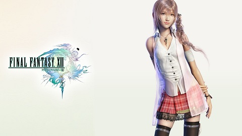
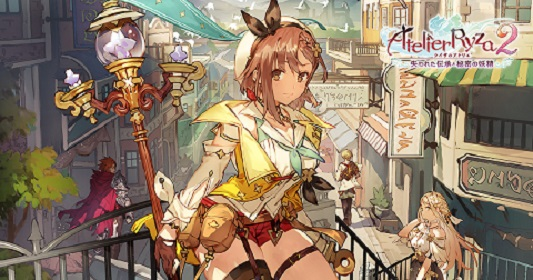

知ってる人は多いであろうファイナルファンタジーシリーズのFF13です。
この作品はかなり複雑なストーリーで、一度やるだけではしっかり理解できません。
FF13,FF13-2,FF13LRの順で３部作となっており、全てプレイしてやっとFF13の世界が理解できるようになります。プレイ難易度自体は少し高めで、難しいRPGをやりたいと考えている人には非常におすすめできるゲームです。

聞いたことある人がいるかな、くらいの知名度のゲーム、ライザのアトリエ。
現在、二作目のライザのアトリエ２まで発売しています。
RPGの基本として装備は武器屋で購入、宝箱からの入手ですが、この作品は装備もアイテムも全てマインクラフトのように自分で作らないといけません。採取してきた使う素材によって武器の強さやアイテムの回復量などが変わります。その新鮮さに私は時間、食事、睡眠を忘れてプレイしました。
皆さん知ってるでしょう。去年発売し、CM等で見たことがあると思います。
この作品は1997年にPlayStationで発売されたFF7の待ちに待ったリメイクです。
私はFFをほとんどプレイしましたが、FF7はその中でもかなりの名作です。リメイクをプレイした後にFF7をプレイしてみるというのも色々な発見があって面白いと思いますよ。十数年続くティファ派とエアリス派という対決がありますが、私はずっとエアリス派です。それと同時にリメイクの続編で出るであろうユフィも期待しています。